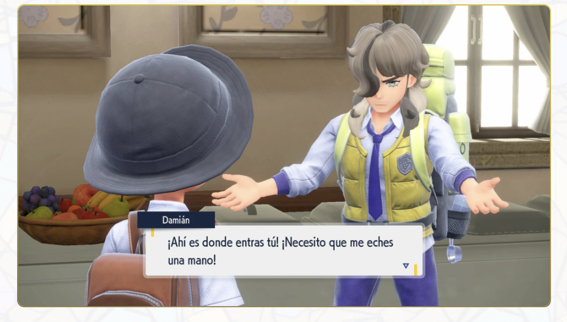
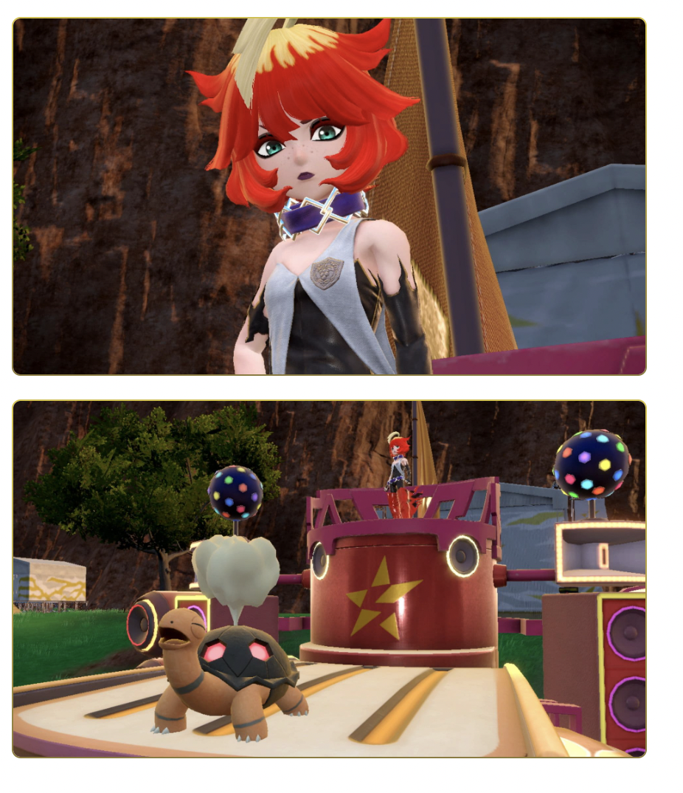
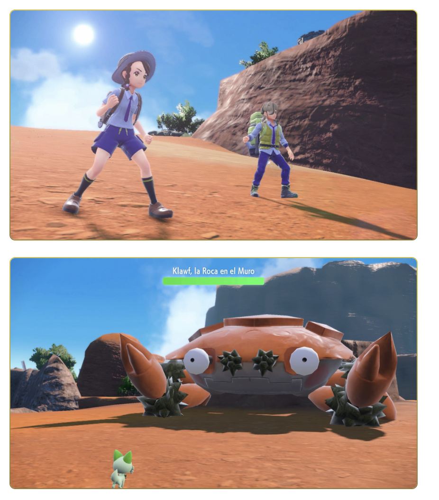
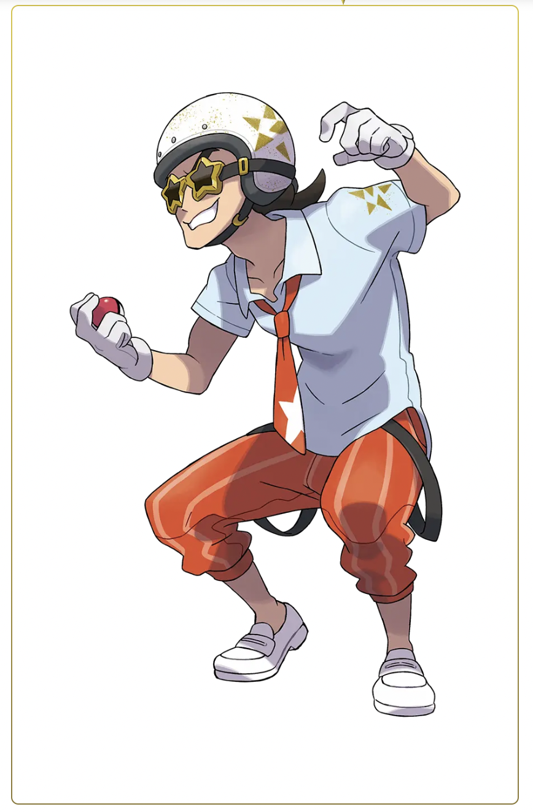

Modo Historia
Antes de enfrentarte al líder del Gimnasio Pokémon, tendrás que superar un examen de gimnasio. El contenido de estos varía según el gimnasio, pero en todos ellos aprenderás más sobre las costumbres y los elementos únicos de cada localidad y el tipo de persona que es cada Líder de Gimnasio..

Como cabe esperar de un título de la saga Pokémon, el mundo abierto que se presenta en Pokémon Scarlet y Pokémon Violet está al alcance hasta de los más novatos.
Como a Damián no se le da especialmente bien combatir, te pedirá que lo ayudes, incluso se ofrecerá a prepararte algunas de sus recetas caseras estrella si consigues estos ingredientes tan poco comunes. ¡Machaca a sus custodios y consigue las especias ocultas con Damián!
Enfrente a los autostar
Cuando hayas superado las oleadas de los Reclutas, su jefe aparecerá subido a un coche tuneado llamado Autostar. Al parecer, este vehículo tampoco te pondrá las cosas fáciles durante el combate. Si te enfrentas a los jefes, no sólo tendrás que derrotar a su equipo Pokémon, ¡también a sus Autostar!
Melo es la jefa del grupo Fuego del Team Star, el Escuadrón Schedar. Es la Entrenadora más completa del equipo y sabe arreglárselas con cualquier problema que se interponga en su camino, aunque sea con mano dura. Da la impresión de ser fuerte y algo tosca, pero su determinación para conseguir lo que se proponga ha hecho que se gane la confianza de sus compañeros. Nota: Los uniformes de los miembros del Team Star dependen de la versión del juego que tengas.
Los Inklings en este modo están equipados con ropa especial que les permite ser revividos si son eliminados. Si lo son, un salvavidas aparecerá en su última posición. Pintándolo, un compañero puede salvarlo junto a un pequeño periodo de invulnerabilidad. Si consiguen un alevín dorado antes de ser eliminado, no se perderá y podrán depositarlo solo después de ser revividos.
Nueva generación
Mientras viajas por la región de Paldea, vivirás tres historias que se entrelazarán durante tu aventura. En la Travesía de la victoria, visitarás distintos gimnasios para conseguir el rango de Campeón o Campeona. En la Senda legendaria, te unirás a Damián para buscar ingredientes muy difíciles de encontrar. Por último, en la Vía Stardust, tendrás que plantarle cara al Team Star, un grupo de buscapleitos que se dedican a sembrar el caos en la academia. Las tres historias tienen lugar en un mundo abierto, así que tú serás quien se encargue de decidir adónde ir en cada momento. Este mundo está lleno de Pokémon y humanos que están esperando conocerte mientras atraviesas la región de Paldea sin más brújula que tu corazón.
La Liga Pokémon gestiona los ocho Gimnasios Pokémon repartidos por la región. Si los Entrenadores visitan los gimnasios, derrotan a todos los Líderes de Gimnasio y, después, aprueban el examen de campeonato en la Liga Pokémon, conseguirán el rango de Campeón.
los stars
El Team Star está formado por los estudiantes más rebeldes de la academia y lo conforman varios escuadrones. Cada uno tiene su propio cabecilla y su propia base, las cuales están repartidas por toda Paldea. Estos delincuentes se dedican a causar problemas y se lo hacen pasar muy mal a los alumnos y profesores de la academia alterando la tranquilidad y usando tácticas de reclutamiento un tanto agresivas. ¡Dirígete a sus bases y plántales cara!
